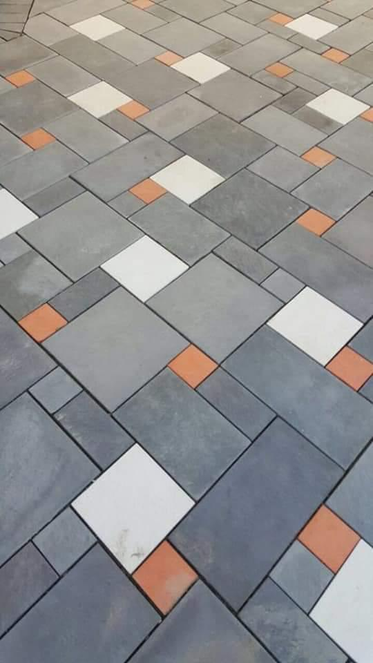

Clad Stones

Features
• Water Absorption
Our cladstones feature low water absorption rates, making them highly resistant to moisture
penetration. This quality helps prevent issues such as efflorescence, staining, and
deterioration caused by water ingress. The reduced water absorption ensures that the cladstones
maintain their integrity and appearance over time, even in damp or wet environments.
• Compression Strength
Cladstones are engineered with high compression strength, providing exceptional durability and
structural stability. This feature makes them ideal for use in high-traffic areas and demanding
applications where load-bearing capabilities are essential. Their robust compression strength
ensures that the cladstones can withstand significant pressure and stress without compromising
their performance.
• Reaction to Heat
Our cladstones are designed to have excellent thermal resistance and minimal reaction to heat.
They maintain their structural integrity and visual appeal even when exposed to high
temperatures. This heat resistance ensures that the cladstones do not warp, crack, or discolor,
making them suitable for use in both interior and exterior applications where heat exposure is a
concern.
• Surface Quality
The surface quality of our cladstones is meticulously controlled to ensure a smooth and
aesthetically pleasing finish. Each cladstone undergoes rigorous quality checks to eliminate
imperfections, ensuring a consistent and high-quality appearance. This attention to surface
quality enhances the overall look of your project and contributes to a professional and polished
finish.
• Size Accuracy
Our cladstones are manufactured with precise size accuracy, ensuring uniformity and ease of
installation. The exact dimensions help achieve a seamless and neat appearance, reducing the
need for adjustments during the installation process. This precision enhances the efficiency of
your project and contributes to a more aesthetically consistent and well-finished surface.
• Color Variations
Our cladstones offer a wide range of color variations, allowing for versatile design options and
creative expression. Whether you prefer subtle tones or vibrant hues, our color choices can be
tailored to match your specific design vision. The consistent coloration ensures that the
aesthetic appeal remains uniform across the entire installation.
• Straightness of Edges
Cladstones are produced with high precision to ensure straight and clean edges. This feature
contributes to the overall neatness and alignment of the installation, creating a professional
and uniform appearance. Straight edges facilitate easier and more accurate placement, enhancing
the visual and structural integrity of your project.